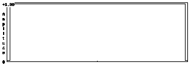
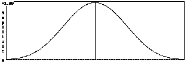
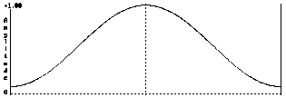
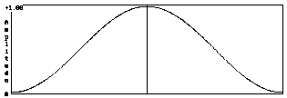
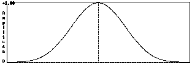

FMOD API User Manual 2.01
These are the parameters for controlling Digital Signal Processors.
DSP Types:
DSP Parameters:
DSP Parameter Types:
Channel Mix DSP parameter types.
typedef enum FMOD_DSP_CHANNELMIX {
FMOD_DSP_CHANNELMIX_OUTPUTGROUPING,
FMOD_DSP_CHANNELMIX_GAIN_CH0,
FMOD_DSP_CHANNELMIX_GAIN_CH1,
FMOD_DSP_CHANNELMIX_GAIN_CH2,
FMOD_DSP_CHANNELMIX_GAIN_CH3,
FMOD_DSP_CHANNELMIX_GAIN_CH4,
FMOD_DSP_CHANNELMIX_GAIN_CH5,
FMOD_DSP_CHANNELMIX_GAIN_CH6,
FMOD_DSP_CHANNELMIX_GAIN_CH7,
FMOD_DSP_CHANNELMIX_GAIN_CH8,
FMOD_DSP_CHANNELMIX_GAIN_CH9,
FMOD_DSP_CHANNELMIX_GAIN_CH10,
FMOD_DSP_CHANNELMIX_GAIN_CH11,
FMOD_DSP_CHANNELMIX_GAIN_CH12,
FMOD_DSP_CHANNELMIX_GAIN_CH13,
FMOD_DSP_CHANNELMIX_GAIN_CH14,
FMOD_DSP_CHANNELMIX_GAIN_CH15,
FMOD_DSP_CHANNELMIX_GAIN_CH16,
FMOD_DSP_CHANNELMIX_GAIN_CH17,
FMOD_DSP_CHANNELMIX_GAIN_CH18,
FMOD_DSP_CHANNELMIX_GAIN_CH19,
FMOD_DSP_CHANNELMIX_GAIN_CH20,
FMOD_DSP_CHANNELMIX_GAIN_CH21,
FMOD_DSP_CHANNELMIX_GAIN_CH22,
FMOD_DSP_CHANNELMIX_GAIN_CH23,
FMOD_DSP_CHANNELMIX_GAIN_CH24,
FMOD_DSP_CHANNELMIX_GAIN_CH25,
FMOD_DSP_CHANNELMIX_GAIN_CH26,
FMOD_DSP_CHANNELMIX_GAIN_CH27,
FMOD_DSP_CHANNELMIX_GAIN_CH28,
FMOD_DSP_CHANNELMIX_GAIN_CH29,
FMOD_DSP_CHANNELMIX_GAIN_CH30,
FMOD_DSP_CHANNELMIX_GAIN_CH31,
FMOD_DSP_CHANNELMIX_OUTPUT_CH0,
FMOD_DSP_CHANNELMIX_OUTPUT_CH1,
FMOD_DSP_CHANNELMIX_OUTPUT_CH2,
FMOD_DSP_CHANNELMIX_OUTPUT_CH3,
FMOD_DSP_CHANNELMIX_OUTPUT_CH4,
FMOD_DSP_CHANNELMIX_OUTPUT_CH5,
FMOD_DSP_CHANNELMIX_OUTPUT_CH6,
FMOD_DSP_CHANNELMIX_OUTPUT_CH7,
FMOD_DSP_CHANNELMIX_OUTPUT_CH8,
FMOD_DSP_CHANNELMIX_OUTPUT_CH9,
FMOD_DSP_CHANNELMIX_OUTPUT_CH10,
FMOD_DSP_CHANNELMIX_OUTPUT_CH11,
FMOD_DSP_CHANNELMIX_OUTPUT_CH12,
FMOD_DSP_CHANNELMIX_OUTPUT_CH13,
FMOD_DSP_CHANNELMIX_OUTPUT_CH14,
FMOD_DSP_CHANNELMIX_OUTPUT_CH15,
FMOD_DSP_CHANNELMIX_OUTPUT_CH16,
FMOD_DSP_CHANNELMIX_OUTPUT_CH17,
FMOD_DSP_CHANNELMIX_OUTPUT_CH18,
FMOD_DSP_CHANNELMIX_OUTPUT_CH19,
FMOD_DSP_CHANNELMIX_OUTPUT_CH20,
FMOD_DSP_CHANNELMIX_OUTPUT_CH21,
FMOD_DSP_CHANNELMIX_OUTPUT_CH22,
FMOD_DSP_CHANNELMIX_OUTPUT_CH23,
FMOD_DSP_CHANNELMIX_OUTPUT_CH24,
FMOD_DSP_CHANNELMIX_OUTPUT_CH25,
FMOD_DSP_CHANNELMIX_OUTPUT_CH26,
FMOD_DSP_CHANNELMIX_OUTPUT_CH27,
FMOD_DSP_CHANNELMIX_OUTPUT_CH28,
FMOD_DSP_CHANNELMIX_OUTPUT_CH29,
FMOD_DSP_CHANNELMIX_OUTPUT_CH30,
FMOD_DSP_CHANNELMIX_OUTPUT_CH31
} FMOD_DSP_CHANNELMIX;
enum DSP_CHANNELMIX
{
OUTPUTGROUPING,
GAIN_CH0,
GAIN_CH1,
GAIN_CH2,
GAIN_CH3,
GAIN_CH4,
GAIN_CH5,
GAIN_CH6,
GAIN_CH7,
GAIN_CH8,
GAIN_CH9,
GAIN_CH10,
GAIN_CH11,
GAIN_CH12,
GAIN_CH13,
GAIN_CH14,
GAIN_CH15,
GAIN_CH16,
GAIN_CH17,
GAIN_CH18,
GAIN_CH19,
GAIN_CH20,
GAIN_CH21,
GAIN_CH22,
GAIN_CH23,
GAIN_CH24,
GAIN_CH25,
GAIN_CH26,
GAIN_CH27,
GAIN_CH28,
GAIN_CH29,
GAIN_CH30,
GAIN_CH31,
OUTPUT_CH0,
OUTPUT_CH1,
OUTPUT_CH2,
OUTPUT_CH3,
OUTPUT_CH4,
OUTPUT_CH5,
OUTPUT_CH6,
OUTPUT_CH7,
OUTPUT_CH8,
OUTPUT_CH9,
OUTPUT_CH10,
OUTPUT_CH11,
OUTPUT_CH12,
OUTPUT_CH13,
OUTPUT_CH14,
OUTPUT_CH15,
OUTPUT_CH16,
OUTPUT_CH17,
OUTPUT_CH18,
OUTPUT_CH19,
OUTPUT_CH20,
OUTPUT_CH21,
OUTPUT_CH22,
OUTPUT_CH23,
OUTPUT_CH24,
OUTPUT_CH25,
OUTPUT_CH26,
OUTPUT_CH27,
OUTPUT_CH28,
OUTPUT_CH29,
OUTPUT_CH30,
OUTPUT_CH31
}
FMOD.DSP_CHANNELMIX_OUTPUTGROUPING
FMOD.DSP_CHANNELMIX_GAIN_CH0
FMOD.DSP_CHANNELMIX_GAIN_CH1
FMOD.DSP_CHANNELMIX_GAIN_CH2
FMOD.DSP_CHANNELMIX_GAIN_CH3
FMOD.DSP_CHANNELMIX_GAIN_CH4
FMOD.DSP_CHANNELMIX_GAIN_CH5
FMOD.DSP_CHANNELMIX_GAIN_CH6
FMOD.DSP_CHANNELMIX_GAIN_CH7
FMOD.DSP_CHANNELMIX_GAIN_CH8
FMOD.DSP_CHANNELMIX_GAIN_CH9
FMOD.DSP_CHANNELMIX_GAIN_CH10
FMOD.DSP_CHANNELMIX_GAIN_CH11
FMOD.DSP_CHANNELMIX_GAIN_CH12
FMOD.DSP_CHANNELMIX_GAIN_CH13
FMOD.DSP_CHANNELMIX_GAIN_CH14
FMOD.DSP_CHANNELMIX_GAIN_CH15
FMOD.DSP_CHANNELMIX_GAIN_CH16
FMOD.DSP_CHANNELMIX_GAIN_CH17
FMOD.DSP_CHANNELMIX_GAIN_CH18
FMOD.DSP_CHANNELMIX_GAIN_CH19
FMOD.DSP_CHANNELMIX_GAIN_CH20
FMOD.DSP_CHANNELMIX_GAIN_CH21
FMOD.DSP_CHANNELMIX_GAIN_CH22
FMOD.DSP_CHANNELMIX_GAIN_CH23
FMOD.DSP_CHANNELMIX_GAIN_CH24
FMOD.DSP_CHANNELMIX_GAIN_CH25
FMOD.DSP_CHANNELMIX_GAIN_CH26
FMOD.DSP_CHANNELMIX_GAIN_CH27
FMOD.DSP_CHANNELMIX_GAIN_CH28
FMOD.DSP_CHANNELMIX_GAIN_CH29
FMOD.DSP_CHANNELMIX_GAIN_CH30
FMOD.DSP_CHANNELMIX_GAIN_CH31
FMOD.DSP_CHANNELMIX_OUTPUT_CH0,
FMOD.DSP_CHANNELMIX_OUTPUT_CH1,
FMOD.DSP_CHANNELMIX_OUTPUT_CH2,
FMOD.DSP_CHANNELMIX_OUTPUT_CH3,
FMOD.DSP_CHANNELMIX_OUTPUT_CH4,
FMOD.DSP_CHANNELMIX_OUTPUT_CH5,
FMOD.DSP_CHANNELMIX_OUTPUT_CH6,
FMOD.DSP_CHANNELMIX_OUTPUT_CH7,
FMOD.DSP_CHANNELMIX_OUTPUT_CH8,
FMOD.DSP_CHANNELMIX_OUTPUT_CH9,
FMOD.DSP_CHANNELMIX_OUTPUT_CH10,
FMOD.DSP_CHANNELMIX_OUTPUT_CH11,
FMOD.DSP_CHANNELMIX_OUTPUT_CH12,
FMOD.DSP_CHANNELMIX_OUTPUT_CH13,
FMOD.DSP_CHANNELMIX_OUTPUT_CH14,
FMOD.DSP_CHANNELMIX_OUTPUT_CH15,
FMOD.DSP_CHANNELMIX_OUTPUT_CH16,
FMOD.DSP_CHANNELMIX_OUTPUT_CH17,
FMOD.DSP_CHANNELMIX_OUTPUT_CH18,
FMOD.DSP_CHANNELMIX_OUTPUT_CH19,
FMOD.DSP_CHANNELMIX_OUTPUT_CH20,
FMOD.DSP_CHANNELMIX_OUTPUT_CH21,
FMOD.DSP_CHANNELMIX_OUTPUT_CH22,
FMOD.DSP_CHANNELMIX_OUTPUT_CH23,
FMOD.DSP_CHANNELMIX_OUTPUT_CH24,
FMOD.DSP_CHANNELMIX_OUTPUT_CH25,
FMOD.DSP_CHANNELMIX_OUTPUT_CH26,
FMOD.DSP_CHANNELMIX_OUTPUT_CH27,
FMOD.DSP_CHANNELMIX_OUTPUT_CH28,
FMOD.DSP_CHANNELMIX_OUTPUT_CH29,
FMOD.DSP_CHANNELMIX_OUTPUT_CH30,
FMOD.DSP_CHANNELMIX_OUTPUT_CH31
Channel mix output grouping. (FMOD_DSP_CHANNELMIX_OUTPUT)
Channel #0 gain.
Channel #1 gain.
Channel #2 gain.
Channel #3 gain.
Channel #4 gain.
Channel #5 gain.
Channel #6 gain.
Channel #7 gain.
Channel #8 gain.
Channel #9 gain.
Channel #10 gain.
Channel #11 gain.
Channel #12 gain.
Channel #13 gain.
Channel #14 gain.
Channel #15 gain.
Channel #16 gain.
Channel #17 gain.
Channel #18 gain.
Channel #19 gain.
Channel #20 gain.
Channel #21 gain.
Channel #22 gain.
Channel #23 gain.
Channel #24 gain.
Channel #25 gain.
Channel #26 gain.
Channel #27 gain.
Channel #28 gain.
Channel #29 gain.
Channel #30 gain.
Channel #31 gain.
Output channel for Input channel #0
Output channel for Input channel #1
Output channel for Input channel #2
Output channel for Input channel #3
Output channel for Input channel #4
Output channel for Input channel #5
Output channel for Input channel #6
Output channel for Input channel #7
Output channel for Input channel #8
Output channel for Input channel #9
Output channel for Input channel #10
Output channel for Input channel #11
Output channel for Input channel #12
Output channel for Input channel #13
Output channel for Input channel #14
Output channel for Input channel #15
Output channel for Input channel #16
Output channel for Input channel #17
Output channel for Input channel #18
Output channel for Input channel #19
Output channel for Input channel #20
Output channel for Input channel #21
Output channel for Input channel #22
Output channel for Input channel #23
Output channel for Input channel #24
Output channel for Input channel #25
Output channel for Input channel #26
Output channel for Input channel #27
Output channel for Input channel #28
Output channel for Input channel #29
Output channel for Input channel #30
Output channel for Input channel #31
For FMOD_DSP_CHANNELMIX_OUTPUTGROUPING, this value will set the output speaker format for the DSP which determines the number of output channels.
For input channels mapped to an output channel in excess of the number of output channels, it will instead be mapped to the modulo of that channel index. Eg if there are 4 output channels, the input channel mapped to output channel index 5 will be mapped to index 1.
See Also: FMOD_DSP_TYPE_CHANNELMIX, DSP::setParameterInt, DSP::setParameterFloat, FMOD_DSP_TYPE
Channel Mix DSP outgrouping parameter types.
typedef enum FMOD_DSP_CHANNELMIX_OUTPUT {
FMOD_DSP_CHANNELMIX_OUTPUT_DEFAULT,
FMOD_DSP_CHANNELMIX_OUTPUT_ALLMONO,
FMOD_DSP_CHANNELMIX_OUTPUT_ALLSTEREO,
FMOD_DSP_CHANNELMIX_OUTPUT_ALLQUAD,
FMOD_DSP_CHANNELMIX_OUTPUT_ALL5POINT1,
FMOD_DSP_CHANNELMIX_OUTPUT_ALL7POINT1,
FMOD_DSP_CHANNELMIX_OUTPUT_ALLLFE,
FMOD_DSP_CHANNELMIX_OUTPUT_ALL7POINT1POINT4
} FMOD_DSP_CHANNELMIX_OUTPUT;
enum DSP_CHANNELMIX_OUTPUT
{
DEFAULT,
ALLMONO,
ALLSTEREO,
ALLQUAD,
ALL5POINT1,
ALL7POINT1,
ALLLFE,
ALL7POINT1POINT4
}
FMOD.DSP_CHANNELMIX_OUTPUT_DEFAULT
FMOD.DSP_CHANNELMIX_OUTPUT_ALLMONO
FMOD.DSP_CHANNELMIX_OUTPUT_ALLSTEREO
FMOD.DSP_CHANNELMIX_OUTPUT_ALLQUAD
FMOD.DSP_CHANNELMIX_OUTPUT_ALL5POINT1
FMOD.DSP_CHANNELMIX_OUTPUT_ALL7POINT1
FMOD.DSP_CHANNELMIX_OUTPUT_ALLLFE
FMOD.DSP_CHANNELMIX_OUTPUT_ALL7POINT1POINT4
See Also: FMOD_DSP_CHANNELMIX_OUTPUTGROUPING, FMOD_DSP_TYPE_CHANNELMIX, DSP::setParameterInt, DSP::getParameterInt, FMOD_DSP_TYPE
Chorus DSP parameter types.
typedef enum FMOD_DSP_CHORUS {
FMOD_DSP_CHORUS_MIX,
FMOD_DSP_CHORUS_RATE,
FMOD_DSP_CHORUS_DEPTH
} FMOD_DSP_CHORUS;
enum DSP_CHORUS
{
MIX,
RATE,
DEPTH,
}
FMOD.DSP_CHORUS_MIX
FMOD.DSP_CHORUS_RATE
FMOD.DSP_CHORUS_DEPTH
Volume of original signal to pass to output.
Chorus modulation rate.
Chorus modulation depth.
Chorus is an effect where the sound is more 'spacious' due to 1 to 3 versions of the sound being played along side the original signal but with the pitch of each copy modulating on a sine wave.
See Also: FMOD_DSP_TYPE_CHORUS, DSP::setParameterFloat, DSP::getParameterFloat, FMOD_DSP_TYPE
Compressor DSP parameter types.
typedef enum FMOD_DSP_COMPRESSOR {
FMOD_DSP_COMPRESSOR_THRESHOLD,
FMOD_DSP_COMPRESSOR_RATIO,
FMOD_DSP_COMPRESSOR_ATTACK,
FMOD_DSP_COMPRESSOR_RELEASE,
FMOD_DSP_COMPRESSOR_GAINMAKEUP,
FMOD_DSP_COMPRESSOR_USESIDECHAIN,
FMOD_DSP_COMPRESSOR_LINKED
} FMOD_DSP_COMPRESSOR;
enum DSP_COMPRESSOR
{
THRESHOLD,
RATIO,
ATTACK,
RELEASE,
GAINMAKEUP,
USESIDECHAIN,
LINKED
}
FMOD.DSP_COMPRESSOR_THRESHOLD
FMOD.DSP_COMPRESSOR_RATIO
FMOD.DSP_COMPRESSOR_ATTACK
FMOD.DSP_COMPRESSOR_RELEASE
FMOD.DSP_COMPRESSOR_GAINMAKEUP
FMOD.DSP_COMPRESSOR_USESIDECHAIN
FMOD.DSP_COMPRESSOR_LINKED
Threshold level.
Compression Ratio.
Attack time.
Release time.
Make-up gain applied after limiting.
false = Independent (compressor per channel), true = Linked.
This is a multichannel software limiter that is uniform across the whole spectrum.
The limiter is not guaranteed to catch every peak above the threshold level, because it cannot apply gain reduction instantaneously - the time delay is determined by the attack time. However setting the attack time too short will distort the sound, so it is a compromise. High level peaks can be avoided by using a short attack time - but not too short, and setting the threshold a few decibels below the critical level.
See Also: FMOD_DSP_TYPE_COMPRESSOR, DSP::setParameterFloat, DSP::setParameterBool
Convolution reverb DSP parameter types.
typedef enum FMOD_DSP_CONVOLUTION_REVERB {
FMOD_DSP_CONVOLUTION_REVERB_PARAM_IR,
FMOD_DSP_CONVOLUTION_REVERB_PARAM_WET,
FMOD_DSP_CONVOLUTION_REVERB_PARAM_DRY,
FMOD_DSP_CONVOLUTION_REVERB_PARAM_LINKED
} FMOD_DSP_CONVOLUTION_REVERB;
enum DSP_CONVOLUTION_REVERB
{
IR,
WET,
DRY,
LINKED
}
FMOD.DSP_CONVOLUTION_REVERB_PARAM_IR
FMOD.DSP_CONVOLUTION_REVERB_PARAM_WET
FMOD.DSP_CONVOLUTION_REVERB_PARAM_DRY
FMOD.DSP_CONVOLUTION_REVERB_PARAM_LINKED
Volume of echo signal to pass to output.
Original sound volume.
Linked - channels are mixed together before processing through the reverb.
Convolution Reverb reverb IR.
See Also: FMOD_DSP_TYPE_CONVOLUTIONREVERB, DSP::setParameterFloat, DSP::setParameterData
Delay DSP parameter types.
typedef enum FMOD_DSP_DELAY {
FMOD_DSP_DELAY_CH0,
FMOD_DSP_DELAY_CH1,
FMOD_DSP_DELAY_CH2,
FMOD_DSP_DELAY_CH3,
FMOD_DSP_DELAY_CH4,
FMOD_DSP_DELAY_CH5,
FMOD_DSP_DELAY_CH6,
FMOD_DSP_DELAY_CH7,
FMOD_DSP_DELAY_CH8,
FMOD_DSP_DELAY_CH9,
FMOD_DSP_DELAY_CH10,
FMOD_DSP_DELAY_CH11,
FMOD_DSP_DELAY_CH12,
FMOD_DSP_DELAY_CH13,
FMOD_DSP_DELAY_CH14,
FMOD_DSP_DELAY_CH15,
FMOD_DSP_DELAY_MAXDELAY
} FMOD_DSP_DELAY;
enum DSP_DELAY
{
CH0,
CH1,
CH2,
CH3,
CH4,
CH5,
CH6,
CH7,
CH8,
CH9,
CH10,
CH11,
CH12,
CH13,
CH14,
CH15,
MAXDELAY,
}
FMOD.DSP_DELAY_CH0
FMOD.DSP_DELAY_CH1
FMOD.DSP_DELAY_CH2
FMOD.DSP_DELAY_CH3
FMOD.DSP_DELAY_CH4
FMOD.DSP_DELAY_CH5
FMOD.DSP_DELAY_CH6
FMOD.DSP_DELAY_CH7
FMOD.DSP_DELAY_CH8
FMOD.DSP_DELAY_CH9
FMOD.DSP_DELAY_CH10
FMOD.DSP_DELAY_CH11
FMOD.DSP_DELAY_CH12
FMOD.DSP_DELAY_CH13
FMOD.DSP_DELAY_CH14
FMOD.DSP_DELAY_CH15
FMOD.DSP_DELAY_MAXDELAY
Channel #0 Delay.
Channel #1 Delay.
Channel #2 Delay.
Channel #3 Delay.
Channel #4 Delay.
Channel #5 Delay.
Channel #6 Delay.
Channel #7 Delay.
Channel #8 Delay.
Channel #9 Delay.
Channel #10 Delay.
Channel #11 Delay.
Channel #12 Delay.
Channel #13 Delay.
Channel #14 Delay.
Channel #15 Delay.
Maximum delay.
Note. Every time MaxDelay is changed, the plugin re-allocates the delay buffer. This means the delay will dissapear at that time while it refills its new buffer. A larger MaxDelay results in larger amounts of memory allocated.
Channel delays above MaxDelay will be clipped to MaxDelay and the delay buffer will not be resized.
See Also: FMOD_DSP_TYPE_DELAY, DSP::setParameterFloat
Distortion DSP parameter types.
typedef enum FMOD_DSP_DISTORTION {
FMOD_DSP_DISTORTION_LEVEL
} FMOD_DSP_DISTORTION;
enum DSP_DISTORTION
{
LEVEL
}
FMOD.DSP_DISTORTION_LEVEL
Distortion value.
See Also: FMOD_DSP_TYPE_DISTORTION, DSP::setParameterFloat
Echo DSP parameter types.
typedef enum FMOD_DSP_ECHO {
FMOD_DSP_ECHO_DELAY,
FMOD_DSP_ECHO_FEEDBACK,
FMOD_DSP_ECHO_DRYLEVEL,
FMOD_DSP_ECHO_WETLEVEL
} FMOD_DSP_ECHO;
enum DSP_ECHO
{
DELAY,
FEEDBACK,
DRYLEVEL,
WETLEVEL
}
FMOD.DSP_ECHO_DELAY
FMOD.DSP_ECHO_FEEDBACK
FMOD.DSP_ECHO_DRYLEVEL
FMOD.DSP_ECHO_WETLEVEL
Echo delay.
Echo decay per delay. 100.0 = No decay, 0.0 = total decay.
Original sound volume.
Volume of echo signal to pass to output.
Note. Every time the delay is changed, the plugin re-allocates the echo buffer. This means the echo will dissapear at that time while it refills its new buffer. Larger echo delays result in larger amounts of memory allocated.
See Also: FMOD_DSP_TYPE_ECHO, DSP::setParameterFloat
Deprecated and will be removed in a future release.
typedef enum FMOD_DSP_ENVELOPEFOLLOWER {
FMOD_DSP_ENVELOPEFOLLOWER_ATTACK,
FMOD_DSP_ENVELOPEFOLLOWER_RELEASE,
FMOD_DSP_ENVELOPEFOLLOWER_ENVELOPE,
FMOD_DSP_ENVELOPEFOLLOWER_USESIDECHAIN
} FMOD_DSP_ENVELOPEFOLLOWER;
enum DSP_ENVELOPEFOLLOWER
{
ATTACK,
RELEASE,
ENVELOPE,
USESIDECHAIN
}
FMOD.DSP_ENVELOPEFOLLOWER_ATTACK
FMOD.DSP_ENVELOPEFOLLOWER_RELEASE
FMOD.DSP_ENVELOPEFOLLOWER_ENVELOPE
FMOD.DSP_ENVELOPEFOLLOWER_USESIDECHAIN
Attack time.
Release time.
Current value of the envelope.
Whether to analyse the sidechain signal instead of the input signal.
Parameter types for the FMOD_DSP_TYPE_ENVELOPEFOLLOWER unit. This is a simple envelope follower for tracking the signal level. This unit does not affect the incoming signal.
See Also: DSP::setParameterFloat, DSP::setParameterData
Fader DSP parameter types.
typedef enum FMOD_DSP_FADER {
FMOD_DSP_FADER_GAIN,
FMOD_DSP_FADER_OVERALL_GAIN
} FMOD_DSP_FADER;
enum DSP_FADER
{
GAIN,
OVERALL_GAIN,
}
Not supported for JavaScript.
Signal gain.
Overall gain to allow FMOD to know the DSP is scaling the signal for visualization purposes.
See Also: FMOD_DSP_TYPE_FADER, DSP::setParameterFloat
FFT DSP parameter types.
typedef enum FMOD_DSP_FFT {
FMOD_DSP_FFT_WINDOWSIZE,
FMOD_DSP_FFT_WINDOWTYPE,
FMOD_DSP_FFT_SPECTRUMDATA,
FMOD_DSP_FFT_DOMINANT_FREQ
} FMOD_DSP_FFT;
enum DSP_FFT
{
WINDOWSIZE,
WINDOWTYPE,
SPECTRUMDATA,
DOMINANT_FREQ
}
FMOD.DSP_FFT_WINDOWSIZE
FMOD.DSP_FFT_WINDOWTYPE
FMOD.DSP_FFT_SPECTRUMDATA
FMOD.DSP_FFT_DOMINANT_FREQ
Window size. Must be a power of 2 between 128 and 16384.
FFT Window Type.
Returns the current spectrum values between 0 and 1 for each 'fft bin'. Divide the Nyquist frequency by the window size to get the hz value per entry.
Returns the dominant frequencies for each channel.
Set the attributes for the spectrum analysis with FMOD_DSP_FFT_WINDOWSIZE and FMOD_DSP_FFT_WINDOWTYPE, and retrieve the results with FMOD_DSP_FFT_SPECTRUM and FMOD_DSP_FFT_DOMINANT_FREQ.
FMOD_DSP_FFT_SPECTRUM stores its data in the FMOD_DSP_PARAMETER_DATA_TYPE_FFT. You will need to cast to this structure to get the right data.
See Also: FMOD_DSP_TYPE_FFT, DSP::setParameterFloat, DSP::setParameterInt, DSP::setParameterData, FMOD_DSP_FFT_WINDOW
List of windowing methods for the FFT DSP.
typedef enum FMOD_DSP_FFT_WINDOW {
FMOD_DSP_FFT_WINDOW_RECT,
FMOD_DSP_FFT_WINDOW_TRIANGLE,
FMOD_DSP_FFT_WINDOW_HAMMING,
FMOD_DSP_FFT_WINDOW_HANNING,
FMOD_DSP_FFT_WINDOW_BLACKMAN,
FMOD_DSP_FFT_WINDOW_BLACKMANHARRIS
} FMOD_DSP_FFT_WINDOW;
enum DSP_FFT_WINDOW
{
RECT,
TRIANGLE,
HAMMING,
HANNING,
BLACKMAN,
BLACKMANHARRIS
}
FMOD.DSP_FFT_WINDOW_RECT
FMOD.DSP_FFT_WINDOW_TRIANGLE
FMOD.DSP_FFT_WINDOW_HAMMING
FMOD.DSP_FFT_WINDOW_HANNING
FMOD.DSP_FFT_WINDOW_BLACKMAN
FMOD.DSP_FFT_WINDOW_BLACKMANHARRIS
Used in spectrum analysis to reduce leakage / transient signals interfering with the analysis. This is a problem with analysis of continuous signals that only have a small portion of the signal sample (the fft window size). Windowing the signal with a curve or triangle tapers the sides of the fft window to help alleviate this problem.
Cyclic signals such as a sine wave that repeat their cycle in a multiple of the window size do not need windowing. I.e. If the sine wave repeats every 1024, 512, 256 etc samples and the FMOD fft window is 1024, then the signal would not need windowing.
Not windowing is the same as FMOD_DSP_FFT_WINDOW_RECT, which is the default. If the cycle of the signal (ie the sine wave) is not a multiple of the window size, it will cause frequency abnormalities, so a different windowing method is needed.




FMOD_DSP_FFT_WINDOW_BLACKMANHARRIS

See Also: FMOD_DSP_FFT, FMOD_DSP_TYPE_FFT
Flange DSP parameter types.
typedef enum FMOD_DSP_FLANGE {
FMOD_DSP_FLANGE_MIX,
FMOD_DSP_FLANGE_DEPTH,
FMOD_DSP_FLANGE_RATE
} FMOD_DSP_FLANGE;
enum DSP_FLANGE
{
MIX,
DEPTH,
RATE
}
FMOD.DSP_FLANGE_MIX
FMOD.DSP_FLANGE_DEPTH
FMOD.DSP_FLANGE_RATE
Percentage of wet signal in mix.
Flange depth.
Flange speed.
Flange is an effect where the signal is played twice at the same time, and one copy slides back and forth creating a whooshing or flanging effect. As there are 2 copies of the same signal, by default each signal is given 50% mix, so that the total is not louder than the original unaffected signal.
Flange depth is a percentage of a 10ms shift from the original signal. Anything above 10ms is not considered flange because to the ear it begins to 'echo' so 10ms is the highest value possible.
See Also: FMOD_DSP_TYPE_FLANGE, DSP::setParameterFloat
Highpass DSP parameter types.
typedef enum FMOD_DSP_HIGHPASS {
FMOD_DSP_HIGHPASS_CUTOFF,
FMOD_DSP_HIGHPASS_RESONANCE
} FMOD_DSP_HIGHPASS;
enum DSP_HIGHPASS
{
CUTOFF,
RESONANCE
}
FMOD.DSP_HIGHPASS_CUTOFF
FMOD.DSP_HIGHPASS_RESONANCE
Highpass cutoff frequency.
Highpass resonance Q value.
Deprecated and will be removed in a future release, to emulate with FMOD_DSP_TYPE_MULTIBAND_EQ:
// Configure a single band (band A) as a highpass (all other bands default to off).
// 12dB rolloff to approximate the old effect curve.
// Cutoff frequency can be used the same as with the old effect.
// Resonance can be applied by setting the 'Q' value of the new effect.
FMOD_DSP_SetParameterInt(multiband, FMOD_DSP_MULTIBAND_EQ_A_FILTER, FMOD_DSP_MULTIBAND_EQ_FILTER_HIGHPASS_12DB);
FMOD_DSP_SetParameterFloat(multiband, FMOD_DSP_MULTIBAND_EQ_A_FREQUENCY, frequency);
FMOD_DSP_SetParameterFloat(multiband, FMOD_DSP_MULTIBAND_EQ_A_Q, resonance);
See Also: FMOD_DSP_TYPE_HIGHPASS, DSP::setParameterFloat
Simple Highpass DSP parameter types.
typedef enum FMOD_DSP_HIGHPASS_SIMPLE {
FMOD_DSP_HIGHPASS_SIMPLE_CUTOFF
} FMOD_DSP_HIGHPASS_SIMPLE;
enum DSP_HIGHPASS_SIMPLE
{
CUTOFF
}
FMOD.DSP_HIGHPASS_SIMPLE_CUTOFF
Highpass cutoff frequency.
Deprecated and will be removed in a future release, to emulate with FMOD_DSP_TYPE_MULTIBAND_EQ:
// Configure a single band (band A) as a highpass (all other bands default to off).
// 12dB rolloff to approximate the old effect curve.
// Cutoff frequency can be used the same as with the old effect.
// Resonance / 'Q' should remain at default 0.707.
FMOD_DSP_SetParameterInt(multiband, FMOD_DSP_MULTIBAND_EQ_A_FILTER, FMOD_DSP_MULTIBAND_EQ_FILTER_HIGHPASS_12DB);
FMOD_DSP_SetParameterFloat(multiband, FMOD_DSP_MULTIBAND_EQ_A_FREQUENCY, frequency);
This is a very simple single-order high pass filter. The emphasis is on speed rather than accuracy, so this should not be used for task requiring critical filtering.
See Also: FMOD_DSP_TYPE_HIGHPASS_SIMPLE, DSP::setParameterFloat
IT Echo DSP parameter types.
typedef enum FMOD_DSP_ITECHO {
FMOD_DSP_ITECHO_WETDRYMIX,
FMOD_DSP_ITECHO_FEEDBACK,
FMOD_DSP_ITECHO_LEFTDELAY,
FMOD_DSP_ITECHO_RIGHTDELAY,
FMOD_DSP_ITECHO_PANDELAY
} FMOD_DSP_ITECHO;
enum DSP_ITECHO
{
WETDRYMIX,
FEEDBACK,
LEFTDELAY,
RIGHTDELAY,
PANDELAY
}
FMOD.DSP_ITECHO_WETDRYMIX
FMOD.DSP_ITECHO_FEEDBACK
FMOD.DSP_ITECHO_LEFTDELAY
FMOD.DSP_ITECHO_RIGHTDELAY
FMOD.DSP_ITECHO_PANDELAY
Ratio of wet (processed) signal to dry (unprocessed) signal.
Percentage of output fed back into input.
Delay for left channel.
Delay for right channel.
Value that specifies whether to swap left and right delays with each successive echo. CURRENTLY NOT SUPPORTED.
This is effectively a software based echo filter that emulates the DirectX DMO echo effect. Impulse tracker files can support this, and FMOD will produce the effect on ANY platform, not just those that support DirectX effects!
Note. Every time the delay is changed, the plugin re-allocates the echo buffer. This means the echo will dissapear at that time while it refills its new buffer. Larger echo delays result in larger amounts of memory allocated.
As this is a stereo filter made mainly for IT playback, it is targeted for stereo signals. With mono signals only the FMOD_DSP_ITECHO_LEFTDELAY is used. For multichannel signals (>2) there will be no echo on those channels.
See Also: FMOD_DSP_TYPE_ITECHO, DSP::setParameterFloat
Lowpass DSP parameter types.
typedef enum FMOD_DSP_ITLOWPASS {
FMOD_DSP_ITLOWPASS_CUTOFF,
FMOD_DSP_ITLOWPASS_RESONANCE
} FMOD_DSP_ITLOWPASS;
enum DSP_ITLOWPASS
{
CUTOFF,
RESONANCE
}
FMOD.DSP_ITLOWPASS_CUTOFF
FMOD.DSP_ITLOWPASS_RESONANCE
Lowpass cutoff frequency.
Lowpass resonance Q value.
FMOD Studio's .IT playback uses this filter.
This is different to the default FMOD_DSP_TYPE_ITLOWPASS filter in that it uses a different quality algorithm and is the filter used to produce the correct sounding playback in .IT files.
Note! This filter actually has a limited cutoff frequency below the specified maximum, due to its limited design, so for a more open range filter use FMOD_DSP_LOWPASS or if you don't mind not having resonance, FMOD_DSP_LOWPASS_SIMPLE.
The effective maximum cutoff is about 8060hz.
See Also: FMOD_DSP_TYPE_ITLOWPASS, DSP::setParameterFloat
Limited DSP parameter types.
typedef enum FMOD_DSP_LIMITER {
FMOD_DSP_LIMITER_RELEASETIME,
FMOD_DSP_LIMITER_CEILING,
FMOD_DSP_LIMITER_MAXIMIZERGAIN,
FMOD_DSP_LIMITER_MODE
} FMOD_DSP_LIMITER;
enum DSP_LIMITER
{
RELEASETIME,
CEILING,
MAXIMIZERGAIN,
MODE,
}
FMOD.DSP_LIMITER_RELEASETIME
FMOD.DSP_LIMITER_CEILING
FMOD.DSP_LIMITER_MAXIMIZERGAIN
FMOD.DSP_LIMITER_MODE
Time to ramp the silence to full.
Maximum level of the output signal.
Maximum amplification allowed.
Channel processing mode where false is Independent (limiter per channel) and true is Linked.
See Also: FMOD_DSP_TYPE_LIMITER, DSP::setParameterFloat
Lowpass DSP parameter types.
typedef enum FMOD_DSP_LOWPASS {
FMOD_DSP_LOWPASS_CUTOFF,
FMOD_DSP_LOWPASS_RESONANCE
} FMOD_DSP_LOWPASS;
enum DSP_LOWPASS
{
CUTOFF,
RESONANCE
}
FMOD.DSP_LOWPASS_CUTOFF
FMOD.DSP_LOWPASS_RESONANCE
Lowpass cutoff frequency.
Lowpass resonance Q value.
Deprecated and will be removed in a future release, to emulate with FMOD_DSP_TYPE_MULTIBAND_EQ:
// Configure a single band (band A) as a lowpass (all other bands default to off).
// 24dB rolloff to approximate the old effect curve.
// Cutoff frequency can be used the same as with the old effect.
// Resonance can be applied by setting the 'Q' value of the new effect.
FMOD_DSP_SetParameterInt(multiband, FMOD_DSP_MULTIBAND_EQ_A_FILTER, FMOD_DSP_MULTIBAND_EQ_FILTER_LOWPASS_24DB);
FMOD_DSP_SetParameterFloat(multiband, FMOD_DSP_MULTIBAND_EQ_A_FREQUENCY, frequency);
FMOD_DSP_SetParameterFloat(multiband, FMOD_DSP_MULTIBAND_EQ_A_Q, resonance);
See Also: FMOD_DSP_TYPE_LOWPASS, DSP::setParameterFloat
Simple Lowpass DSP Parameter types.
typedef enum FMOD_DSP_LOWPASS_SIMPLE {
FMOD_DSP_LOWPASS_SIMPLE_CUTOFF
} FMOD_DSP_LOWPASS_SIMPLE;
enum DSP_LOWPASS_SIMPLE
{
CUTOFF
}
FMOD.DSP_LOWPASS_SIMPLE_CUTOFF
Lowpass cutoff frequency.
Deprecated and will be removed in a future release, to emulate with FMOD_DSP_TYPE_MULTIBAND_EQ:
// Configure a single band (band A) as a lowpass (all other bands default to off).
// 12dB rolloff to approximate the old effect curve.
// Cutoff frequency can be used the same as with the old effect.
// Resonance / 'Q' should remain at default 0.707.
FMOD_DSP_SetParameterInt(multiband, FMOD_DSP_MULTIBAND_EQ_A_FILTER, FMOD_DSP_MULTIBAND_EQ_FILTER_LOWPASS_12DB);
FMOD_DSP_SetParameterFloat(multiband, FMOD_DSP_MULTIBAND_EQ_A_FREQUENCY, frequency);
This is a very simple low pass filter, based on two single-pole RC time-constant modules.
The emphasis is on speed rather than accuracy, so this should not be used for task requiring critical filtering.
See Also: FMOD_DSP_TYPE_LOWPASS_SIMPLE, DSP::setParameterFloat, DSP::getParameterFloat, FMOD_DSP_TYPE
Multiband EQ DSP parameter types.
typedef enum FMOD_DSP_MULTIBAND_EQ {
FMOD_DSP_MULTIBAND_EQ_A_FILTER,
FMOD_DSP_MULTIBAND_EQ_A_FREQUENCY,
FMOD_DSP_MULTIBAND_EQ_A_Q,
FMOD_DSP_MULTIBAND_EQ_A_GAIN,
FMOD_DSP_MULTIBAND_EQ_B_FILTER,
FMOD_DSP_MULTIBAND_EQ_B_FREQUENCY,
FMOD_DSP_MULTIBAND_EQ_B_Q,
FMOD_DSP_MULTIBAND_EQ_B_GAIN,
FMOD_DSP_MULTIBAND_EQ_C_FILTER,
FMOD_DSP_MULTIBAND_EQ_C_FREQUENCY,
FMOD_DSP_MULTIBAND_EQ_C_Q,
FMOD_DSP_MULTIBAND_EQ_C_GAIN,
FMOD_DSP_MULTIBAND_EQ_D_FILTER,
FMOD_DSP_MULTIBAND_EQ_D_FREQUENCY,
FMOD_DSP_MULTIBAND_EQ_D_Q,
FMOD_DSP_MULTIBAND_EQ_D_GAIN,
FMOD_DSP_MULTIBAND_EQ_E_FILTER,
FMOD_DSP_MULTIBAND_EQ_E_FREQUENCY,
FMOD_DSP_MULTIBAND_EQ_E_Q,
FMOD_DSP_MULTIBAND_EQ_E_GAIN
} FMOD_DSP_MULTIBAND_EQ;
enum DSP_MULTIBAND_EQ
{
A_FILTER,
A_FREQUENCY,
A_Q,
A_GAIN,
B_FILTER,
B_FREQUENCY,
B_Q,
B_GAIN,
C_FILTER,
C_FREQUENCY,
C_Q,
C_GAIN,
D_FILTER,
D_FREQUENCY,
D_Q,
D_GAIN,
E_FILTER,
E_FREQUENCY,
E_Q,
E_GAIN,
}
FMOD.DSP_MULTIBAND_EQ_A_FILTER
FMOD.DSP_MULTIBAND_EQ_A_FREQUENCY
FMOD.DSP_MULTIBAND_EQ_A_Q
FMOD.DSP_MULTIBAND_EQ_A_GAIN
FMOD.DSP_MULTIBAND_EQ_B_FILTER
FMOD.DSP_MULTIBAND_EQ_B_FREQUENCY
FMOD.DSP_MULTIBAND_EQ_B_Q
FMOD.DSP_MULTIBAND_EQ_B_GAIN
FMOD.DSP_MULTIBAND_EQ_C_FILTER
FMOD.DSP_MULTIBAND_EQ_C_FREQUENCY
FMOD.DSP_MULTIBAND_EQ_C_Q
FMOD.DSP_MULTIBAND_EQ_C_GAIN
FMOD.DSP_MULTIBAND_EQ_D_FILTER
FMOD.DSP_MULTIBAND_EQ_D_FREQUENCY
FMOD.DSP_MULTIBAND_EQ_D_Q
FMOD.DSP_MULTIBAND_EQ_D_GAIN
FMOD.DSP_MULTIBAND_EQ_E_FILTER
FMOD.DSP_MULTIBAND_EQ_E_FREQUENCY
FMOD.DSP_MULTIBAND_EQ_E_Q
FMOD.DSP_MULTIBAND_EQ_E_GAIN
Band A: used to interpret the behavior of the remaining parameters.
Band A: Significant frequency, cutoff [low/high pass, low/high shelf], center [notch, peaking, band-pass], phase transition point [all-pass].
Band A: Quality factor, resonance [low/high pass], bandwidth [notch, peaking, band-pass], phase transition sharpness [all-pass], unused [low/high shelf].
Band A: Boost or attenuation in dB [peaking, high/low shelf only]. -30 to 30. Default = 0.
Band B: See Band A.
Band C: See Band A.
Band D: See Band A.
Band E: See Band A.
Flexible five band parametric equalizer.
See Also: FMOD_DSP_TYPE_MULTIBAND_EQ, DSP::setParameterInt, DSP::setParameterFloat
Multiband EQ Filter types.
typedef enum FMOD_DSP_MULTIBAND_EQ_FILTER_TYPE {
FMOD_DSP_MULTIBAND_EQ_FILTER_DISABLED,
FMOD_DSP_MULTIBAND_EQ_FILTER_LOWPASS_12DB,
FMOD_DSP_MULTIBAND_EQ_FILTER_LOWPASS_24DB,
FMOD_DSP_MULTIBAND_EQ_FILTER_LOWPASS_48DB,
FMOD_DSP_MULTIBAND_EQ_FILTER_HIGHPASS_12DB,
FMOD_DSP_MULTIBAND_EQ_FILTER_HIGHPASS_24DB,
FMOD_DSP_MULTIBAND_EQ_FILTER_HIGHPASS_48DB,
FMOD_DSP_MULTIBAND_EQ_FILTER_LOWSHELF,
FMOD_DSP_MULTIBAND_EQ_FILTER_HIGHSHELF,
FMOD_DSP_MULTIBAND_EQ_FILTER_PEAKING,
FMOD_DSP_MULTIBAND_EQ_FILTER_BANDPASS,
FMOD_DSP_MULTIBAND_EQ_FILTER_NOTCH,
FMOD_DSP_MULTIBAND_EQ_FILTER_ALLPASS
} FMOD_DSP_MULTIBAND_EQ_FILTER_TYPE;
enum DSP_MULTIBAND_EQ_FILTER_TYPE
{
DISABLED,
LOWPASS_12DB,
LOWPASS_24DB,
LOWPASS_48DB,
HIGHPASS_12DB,
HIGHPASS_24DB,
HIGHPASS_48DB,
LOWSHELF,
HIGHSHELF,
PEAKING,
BANDPASS,
NOTCH,
ALLPASS,
}
FMOD.DSP_MULTIBAND_EQ_FILTER_DISABLED
FMOD.DSP_MULTIBAND_EQ_FILTER_LOWPASS_12DB
FMOD.DSP_MULTIBAND_EQ_FILTER_LOWPASS_24DB
FMOD.DSP_MULTIBAND_EQ_FILTER_LOWPASS_48DB
FMOD.DSP_MULTIBAND_EQ_FILTER_HIGHPASS_12DB
FMOD.DSP_MULTIBAND_EQ_FILTER_HIGHPASS_24DB
FMOD.DSP_MULTIBAND_EQ_FILTER_HIGHPASS_48DB
FMOD.DSP_MULTIBAND_EQ_FILTER_LOWSHELF
FMOD.DSP_MULTIBAND_EQ_FILTER_HIGHSHELF
FMOD.DSP_MULTIBAND_EQ_FILTER_PEAKING
FMOD.DSP_MULTIBAND_EQ_FILTER_BANDPASS
FMOD.DSP_MULTIBAND_EQ_FILTER_NOTCH
FMOD.DSP_MULTIBAND_EQ_FILTER_ALLPASS
See Also: FMOD_DSP_MULTIBAND_EQ
Normalize DSP parameter types.
typedef enum FMOD_DSP_NORMALIZE {
FMOD_DSP_NORMALIZE_FADETIME,
FMOD_DSP_NORMALIZE_THRESHHOLD,
FMOD_DSP_NORMALIZE_MAXAMP
} FMOD_DSP_NORMALIZE;
enum DSP_NORMALIZE
{
FADETIME,
THRESHHOLD,
MAXAMP
}
FMOD.DSP_NORMALIZE_FADETIME
FMOD.DSP_NORMALIZE_THRESHHOLD
FMOD.DSP_NORMALIZE_MAXAMP
Time to ramp the silence to full.
Lower volume range threshold to ignore.
Maximum amplification allowed.
Normalize amplifies the sound based on the maximum peaks within the signal. For example if the maximum peaks in the signal were 50% of the bandwidth, it would scale the whole sound by 2.
The lower threshold value makes the normalizer ignores peaks below a certain point, to avoid over-amplification if a loud signal suddenly came in, and also to avoid amplifying to maximum things like background hiss.
Because FMOD is a realtime audio processor, it doesn't have the luxury of knowing the peak for the whole sound (ie it can't see into the future), so it has to process data as it comes in.
To avoid very sudden changes in volume level based on small samples of new data, fmod fades towards the desired amplification which makes for smooth gain control. The fadetime parameter can control this.
See Also: FMOD_DSP_TYPE_NORMALIZE, DSP::setParameterFloat
Object based spatializer parameters.
typedef enum FMOD_DSP_OBJECTPAN {
FMOD_DSP_OBJECTPAN_3D_POSITION,
FMOD_DSP_OBJECTPAN_3D_ROLLOFF,
FMOD_DSP_OBJECTPAN_3D_MIN_DISTANCE,
FMOD_DSP_OBJECTPAN_3D_MAX_DISTANCE,
FMOD_DSP_OBJECTPAN_3D_EXTENT_MODE,
FMOD_DSP_OBJECTPAN_3D_SOUND_SIZE,
FMOD_DSP_OBJECTPAN_3D_MIN_EXTENT,
FMOD_DSP_OBJECTPAN_OVERALL_GAIN,
FMOD_DSP_OBJECTPAN_OUTPUTGAIN
} FMOD_DSP_OBJECTPAN;
enum DSP_OBJECTPAN
{
_3D_POSITION,
_3D_ROLLOFF,
_3D_MIN_DISTANCE,
_3D_MAX_DISTANCE,
_3D_EXTENT_MODE,
_3D_SOUND_SIZE,
_3D_MIN_EXTENT,
OVERALL_GAIN,
OUTPUTGAIN
}
FMOD.DSP_OBJECTPAN_3D_POSITION
FMOD.DSP_OBJECTPAN_3D_ROLLOFF
FMOD.DSP_OBJECTPAN_3D_MIN_DISTANCE
FMOD.DSP_OBJECTPAN_3D_MAX_DISTANCE
FMOD.DSP_OBJECTPAN_3D_EXTENT_MODE
FMOD.DSP_OBJECTPAN_3D_SOUND_SIZE
FMOD.DSP_OBJECTPAN_3D_MIN_EXTENT
FMOD.DSP_OBJECTPAN_OVERALL_GAIN
FMOD.DSP_OBJECTPAN_OUTPUTGAIN
3D Position.
3D Rolloff Type.
3D Min Distance.
3D Max Distance.
3D Extent Mode.
3D Sound Size.
3D Min Extent.
Overall gain to allow FMOD to know the DSP is scaling the signal for virtualization purposes.
Output gain level.
Signal processed by this DSP will be sent to the global object mixer (effectively a send), any DSP connected after this will receive silence.
For best results this DSP should be used with FMOD_OUTPUTTYPE_WINSONIC or FMOD_OUTPUTTYPE_AUDIO3D to get height spatialization. Playback with any other output will result in fallback spatialization provided by FMOD_DSP_TYPE_PAN.
See Also: FMOD_DSP_TYPE_OBJECTPAN, DSP::setParameterFloat, DSP::setParameterInt, DSP::setParameterData
Oscillator DSP parameter types.
typedef enum FMOD_DSP_OSCILLATOR {
FMOD_DSP_OSCILLATOR_TYPE,
FMOD_DSP_OSCILLATOR_RATE
} FMOD_DSP_OSCILLATOR;
enum DSP_OSCILLATOR
{
TYPE,
RATE
}
FMOD.DSP_OSCILLATOR_TYPE
FMOD.DSP_OSCILLATOR_RATE
Waveform type. 0 = sine. 1 = square. 2 = sawup. 3 = sawdown. 4 = triangle. 5 = noise.
Frequency of the sinewave.
See Also: FMOD_DSP_TYPE_OSCILLATOR, DSP::setParameterFloat, DSP::setParameterInt
Pan DSP parameter types.
typedef enum FMOD_DSP_PAN {
FMOD_DSP_PAN_MODE,
FMOD_DSP_PAN_2D_STEREO_POSITION,
FMOD_DSP_PAN_2D_DIRECTION,
FMOD_DSP_PAN_2D_EXTENT,
FMOD_DSP_PAN_2D_ROTATION,
FMOD_DSP_PAN_2D_LFE_LEVEL,
FMOD_DSP_PAN_2D_STEREO_MODE,
FMOD_DSP_PAN_2D_STEREO_SEPARATION,
FMOD_DSP_PAN_2D_STEREO_AXIS,
FMOD_DSP_PAN_ENABLED_SPEAKERS,
FMOD_DSP_PAN_3D_POSITION,
FMOD_DSP_PAN_3D_ROLLOFF,
FMOD_DSP_PAN_3D_MIN_DISTANCE,
FMOD_DSP_PAN_3D_MAX_DISTANCE,
FMOD_DSP_PAN_3D_EXTENT_MODE,
FMOD_DSP_PAN_3D_SOUND_SIZE,
FMOD_DSP_PAN_3D_MIN_EXTENT,
FMOD_DSP_PAN_3D_PAN_BLEND,
FMOD_DSP_PAN_LFE_UPMIX_ENABLED,
FMOD_DSP_PAN_OVERALL_GAIN,
FMOD_DSP_PAN_SURROUND_SPEAKER_MODE,
FMOD_DSP_PAN_2D_HEIGHT_BLEND
} FMOD_DSP_PAN;
enum DSP_PAN
{
MODE,
_2D_STEREO_POSITION,
_2D_DIRECTION,
_2D_EXTENT,
_2D_ROTATION,
_2D_LFE_LEVEL,
_2D_STEREO_MODE,
_2D_STEREO_SEPARATION,
_2D_STEREO_AXIS,
ENABLED_SPEAKERS,
_3D_POSITION,
_3D_ROLLOFF,
_3D_MIN_DISTANCE,
_3D_MAX_DISTANCE,
_3D_EXTENT_MODE,
_3D_SOUND_SIZE,
_3D_MIN_EXTENT,
_3D_PAN_BLEND,
LFE_UPMIX_ENABLED,
OVERALL_GAIN,
SURROUND_SPEAKER_MODE,
_2D_HEIGHT_BLEND,
}
FMOD.DSP_PAN_MODE
FMOD.DSP_PAN_2D_STEREO_POSITION
FMOD.DSP_PAN_2D_DIRECTION
FMOD.DSP_PAN_2D_EXTENT
FMOD.DSP_PAN_2D_ROTATION
FMOD.DSP_PAN_2D_LFE_LEVEL
FMOD.DSP_PAN_2D_STEREO_MODE
FMOD.DSP_PAN_2D_STEREO_SEPARATION
FMOD.DSP_PAN_2D_STEREO_AXIS
FMOD.DSP_PAN_ENABLED_SPEAKERS
FMOD.DSP_PAN_3D_POSITION
FMOD.DSP_PAN_3D_ROLLOFF
FMOD.DSP_PAN_3D_MIN_DISTANCE
FMOD.DSP_PAN_3D_MAX_DISTANCE
FMOD.DSP_PAN_3D_EXTENT_MODE
FMOD.DSP_PAN_3D_SOUND_SIZE
FMOD.DSP_PAN_3D_MIN_EXTENT
FMOD.DSP_PAN_3D_PAN_BLEND
FMOD.DSP_PAN_LFE_UPMIX_ENABLED
FMOD.DSP_PAN_OVERALL_GAIN
FMOD.DSP_PAN_SURROUND_SPEAKER_MODE
Panner mode.
2D Stereo pan position.
2D Surround pan direction. Direction from center point of panning circle where 0 is front center and -180 or +180 is rear speakers center point.
2D Surround pan extent.
2D Surround pan rotation.
2D Surround pan LFE level.
Stereo-To-Surround Mode.
Stereo-To-Surround Stereo For FMOD_DSP_PAN_2D_STEREO_MODE_DISCRETE mode. Separation/width of L/R parts of stereo sound.
Stereo-To-Surround Stereo For FMOD_DSP_PAN_2D_STEREO_MODE_DISCRETE mode. Axis/rotation of L/R parts of stereo sound.
Speakers Enabled Bitmask for each speaker from 0 to 32 to be considered by panner. Use to disable speakers from being panned to. 0 to 0xFFF. Default = 0xFFF (All on).
3D Position.
3D Rolloff.
3D Min Distance.
3D Max Distance.
3D Extent Mode.
3D Sound Size.
3D Min Extent.
3D Pan Blend.
LFE Upmix Enabled. Determines whether non-LFE source channels should mix to the LFE or leave it alone. 0 (off) to 1 (on). Default = 0 (off)..
Overall gain to allow FMOD to know the DSP is scaling the signal for visualization purposes.
Surround speaker mode. (FMOD_SPEAKERMODE)
2D Height blend. When the input or FMOD_DSP_PAN_SURROUND_SPEAKER_MODE has height speakers, control the blend between ground and height. -1.0 (push top speakers to ground), 0.0 (preserve top / ground separation), 1.0 (push ground speakers to top).
FMOD_DSP_PAN_3D_PAN_BLEND controls the percentage of the effect supplied by FMOD_DSP_PAN_2D_DIRECTION and FMOD_DSP_PAN_2D_EXTENT.
For FMOD_DSP_PAN_3D_POSITION, the following members in the FMOD_DSP_PARAMETER_3DATTRIBUTES_MULTI struct should be non zero.
- numlisteners - This is typically 1, can be up to 8. Typically more than 1 is only used for split screen purposes. The FMOD Panner will average angles and produce the best compromise for panning and attenuation.
- relative[listenernum].position - This is the delta between the listener position and the sound position. Typically the listener position is subtracted from the sound position.
- relative[listenernum].forward - This is the sound's forward vector. Optional, set to 0,0,1 if not needed. This is only relevant for more than mono sounds in 3D, that are spread amongst the destination speakers at the time of panning.
If the sound rotates then the L/R part of a stereo sound will rotate amongst its destination speakers.
If the sound has moved and pinpointed into a single speaker, rotation of the sound will have no effect as at that point the channels are collapsed into a single point.
For FMOD_DSP_PAN_2D_STEREO_MODE, when it is set to FMOD_DSP_PAN_2D_STEREO_MODE_DISCRETE, only FMOD_DSP_PAN_2D_STEREO_SEPARATION and FMOD_DSP_PAN_2D_STEREO_AXIS are used.
When it is set to FMOD_DSP_PAN_2D_STEREO_MODE_DISTRIBUTED, then standard FMOD_DSP_PAN_2D_DIRECTION/FMOD_DSP_PAN_2D_EXTENT parameters are used.
See Also: FMOD_DSP_TYPE_PAN, DSP::setParameterFloat, DSP::setParameterInt, DSP::setParameterData
2D Stereo Mode values for Pan DSP.
typedef enum FMOD_DSP_PAN_2D_STEREO_MODE_TYPE {
FMOD_DSP_PAN_2D_STEREO_MODE_DISTRIBUTED,
FMOD_DSP_PAN_2D_STEREO_MODE_DISCRETE
} FMOD_DSP_PAN_2D_STEREO_MODE_TYPE;
enum DSP_PAN_2D_STEREO_MODE_TYPE
{
DISTRIBUTED,
DISCRETE
}
FMOD.DSP_PAN_2D_STEREO_MODE_DISTRIBUTED
FMOD.DSP_PAN_2D_STEREO_MODE_DISCRETE
See Also: FMOD_DSP_PAN_2D_STEREO_MODE, FMOD_DSP_TYPE_PAN, FMOD_DSP_PAN
3D Extent Mode values for Pan DSP.
typedef enum FMOD_DSP_PAN_3D_EXTENT_MODE_TYPE {
FMOD_DSP_PAN_3D_EXTENT_MODE_AUTO,
FMOD_DSP_PAN_3D_EXTENT_MODE_USER,
FMOD_DSP_PAN_3D_EXTENT_MODE_OFF
} FMOD_DSP_PAN_3D_EXTENT_MODE_TYPE;
enum DSP_PAN_3D_EXTENT_MODE_TYPE
{
AUTO,
USER,
OFF
}
FMOD.DSP_PAN_3D_EXTENT_MODE_AUTO
FMOD.DSP_PAN_3D_EXTENT_MODE_USER
FMOD.DSP_PAN_3D_EXTENT_MODE_OFF
See Also: FMOD_DSP_PAN_3D_EXTENT_MODE, FMOD_DSP_TYPE_PAN, FMOD_DSP_PAN
3D Rolloff values for Pan DSP.
typedef enum FMOD_DSP_PAN_3D_ROLLOFF_TYPE {
FMOD_DSP_PAN_3D_ROLLOFF_LINEARSQUARED,
FMOD_DSP_PAN_3D_ROLLOFF_LINEAR,
FMOD_DSP_PAN_3D_ROLLOFF_INVERSE,
FMOD_DSP_PAN_3D_ROLLOFF_INVERSETAPERED,
FMOD_DSP_PAN_3D_ROLLOFF_CUSTOM
} FMOD_DSP_PAN_3D_ROLLOFF_TYPE;
enum DSP_PAN_3D_ROLLOFF_TYPE
{
LINEARSQUARED,
LINEAR,
INVERSE,
INVERSETAPERED,
CUSTOM
}
FMOD.DSP_PAN_3D_ROLLOFF_LINEARSQUARED
FMOD.DSP_PAN_3D_ROLLOFF_LINEAR
FMOD.DSP_PAN_3D_ROLLOFF_INVERSE
FMOD.DSP_PAN_3D_ROLLOFF_INVERSETAPERED
FMOD.DSP_PAN_3D_ROLLOFF_CUSTOM
See Also: FMOD_DSP_PAN_3D_ROLLOFF, FMOD_DSP_TYPE_PAN, FMOD_DSP_PAN
3D Pan Mode values for Pan DSP.
typedef enum FMOD_DSP_PAN_MODE_TYPE {
FMOD_DSP_PAN_MODE_MONO,
FMOD_DSP_PAN_MODE_STEREO,
FMOD_DSP_PAN_MODE_SURROUND
} FMOD_DSP_PAN_MODE_TYPE;
enum DSP_PAN_MODE_TYPE
{
MONO,
STEREO,
SURROUND
}
FMOD.DSP_PAN_MODE_MONO
FMOD.DSP_PAN_MODE_STEREO
FMOD.DSP_PAN_MODE_SURROUND
See Also: FMOD_DSP_PAN_MODE, FMOD_DSP_TYPE_PAN, FMOD_DSP_PAN
Parametric EQ DSP parameter types.
typedef enum FMOD_DSP_PARAMEQ {
FMOD_DSP_PARAMEQ_CENTER,
FMOD_DSP_PARAMEQ_BANDWIDTH,
FMOD_DSP_PARAMEQ_GAIN
} FMOD_DSP_PARAMEQ;
enum DSP_PARAMEQ
{
CENTER,
BANDWIDTH,
GAIN
}
FMOD.DSP_PARAMEQ_CENTER
FMOD.DSP_PARAMEQ_BANDWIDTH
FMOD.DSP_PARAMEQ_GAIN
Frequency center.
Octave range around the center frequency to filter.
Frequency Gain in dB.
Deprecated and will be removed in a future release, to emulate with FMOD_DSP_TYPE_MULTIBAND_EQ:
// Configure a single band (band A) as a peaking EQ (all other bands default to off).
// Center frequency can be used as with the old effect.
// Bandwidth can be applied by setting the 'Q' value of the new effect.
// Gain at the center frequency can be used the same as with the old effect.
FMOD_DSP_SetParameterInt(multiband, FMOD_DSP_MULTIBAND_EQ_A_FILTER, FMOD_DSP_MULTIBAND_EQ_FILTER_PEAKING);
FMOD_DSP_SetParameterFloat(multiband, FMOD_DSP_MULTIBAND_EQ_A_FREQUENCY, center);
FMOD_DSP_SetParameterFloat(multiband, FMOD_DSP_MULTIBAND_EQ_A_Q, bandwidth);
FMOD_DSP_SetParameterFloat(multiband, FMOD_DSP_MULTIBAND_EQ_A_GAIN, gain);
Parametric EQ is a single band peaking EQ filter that attenuates or amplifies a selected frequency and its neighbouring frequencies.
When a frequency has its gain set to 1.0, the sound will be unaffected and represents the original signal exactly.
See Also: FMOD_DSP_TYPE_PARAMEQ, DSP::setParameterFloat, DSP::getParameterFloat, FMOD_DSP_TYPE
Pitch shift DSP parameter types.
typedef enum FMOD_DSP_PITCHSHIFT {
FMOD_DSP_PITCHSHIFT_PITCH,
FMOD_DSP_PITCHSHIFT_FFTSIZE,
FMOD_DSP_PITCHSHIFT_OVERLAP,
FMOD_DSP_PITCHSHIFT_MAXCHANNELS
} FMOD_DSP_PITCHSHIFT;
enum DSP_PITCHSHIFT
{
PITCH,
FFTSIZE,
OVERLAP,
MAXCHANNELS
}
FMOD.DSP_PITCHSHIFT_PITCH
FMOD.DSP_PITCHSHIFT_FFTSIZE
FMOD.DSP_PITCHSHIFT_OVERLAP
FMOD.DSP_PITCHSHIFT_MAXCHANNELS
Pitch value. 0.5 = one octave down, 2.0 = one octave up. 1.0 does not change the pitch.
FFT window size - 256, 512, 1024, 2048, 4096. Increase this to reduce 'smearing'. This effect is a warbling sound similar to when an mp3 is encoded at very low bitrates.
Maximum channels supported. 0 = same as fmod's default output polyphony, 1 = mono, 2 = stereo etc. See remarks for more. It is suggested to leave at 0!
This pitch shifting unit can be used to change the pitch of a sound without speeding it up or slowing it down.
It can also be used for time stretching or scaling, for example if the pitch was doubled, and the frequency of the sound was halved, the pitch of the sound would sound correct but it would be twice as slow.
Warning! This filter is very computationally expensive! Similar to a vocoder, it requires several overlapping FFT and IFFT's to produce smooth output, and can require around 440mhz for 1 stereo 48khz signal using the default settings. Reducing the signal to mono will half the cpu usage. Reducing this will lower audio quality, but what settings to use are largely dependant on the sound being played. A noisy polyphonic signal will need higher fft size compared to a speaking voice for example.
This pitch shifter is based on the pitch shifter code at http://www.dspdimension.com, written by Stephan M. Bernsee. The original code is COPYRIGHT 1999-2003 Stephan M. Bernsee - smb@dspdimension.com.
'maxchannels' dictates the amount of memory allocated. By default, the maxchannels value is 0. If FMOD is set to stereo, the pitch shift unit will allocate enough memory for 2 channels. If it is 5.1, it will allocate enough memory for a 6 channel pitch shift, etc.
If the pitch shift effect is only ever applied to the global mix (ie it was added with ChannelGroup::addDSP), then 0 is the value to set as it will be enough to handle all speaker modes.
When the pitch shift is added to a channel (ie Channel::addDSP) then the channel count that comes in could be anything from 1 to 8 possibly. It is only in this case where you might want to increase the channel count above the output's channel count.
If a channel pitch shift is set to a lower number than the sound's channel count that is coming in, it will not pitch shift the sound.
See Also: FMOD_DSP_TYPE_PITCHSHIFT, DSP::setParameterFloat
Return DSP parameter types.
typedef enum FMOD_DSP_RETURN {
FMOD_DSP_RETURN_ID,
FMOD_DSP_RETURN_INPUT_SPEAKER_MODE
} FMOD_DSP_RETURN;
enum DSP_RETURN
{
ID,
INPUT_SPEAKER_MODE
}
FMOD.DSP_RETURN_ID
FMOD.DSP_RETURN_INPUT_SPEAKER_MODE
ID of this Return DSP.
Input speaker mode of this return.
See Also: FMOD_DSP_TYPE_RETURN, DSP::setParameterInt
Send DSP parameter types.
typedef enum FMOD_DSP_SEND {
FMOD_DSP_SEND_RETURNID,
FMOD_DSP_SEND_LEVEL
} FMOD_DSP_SEND;
enum DSP_SEND
{
RETURNID,
LEVEL,
}
FMOD.DSP_SEND_RETURNID
FMOD.DSP_SEND_LEVEL
ID of the Return DSP this send is connected to where -1 indicates no connected return DSP.
Send level.
See Also: FMOD_DSP_TYPE_SEND, DSP::setParameterInt, DSP::setParameterFloat
SFX Reverb DSP parameter types.
typedef enum FMOD_DSP_SFXREVERB {
FMOD_DSP_SFXREVERB_DECAYTIME,
FMOD_DSP_SFXREVERB_EARLYDELAY,
FMOD_DSP_SFXREVERB_LATEDELAY,
FMOD_DSP_SFXREVERB_HFREFERENCE,
FMOD_DSP_SFXREVERB_HFDECAYRATIO,
FMOD_DSP_SFXREVERB_DIFFUSION,
FMOD_DSP_SFXREVERB_DENSITY,
FMOD_DSP_SFXREVERB_LOWSHELFFREQUENCY,
FMOD_DSP_SFXREVERB_LOWSHELFGAIN,
FMOD_DSP_SFXREVERB_HIGHCUT,
FMOD_DSP_SFXREVERB_EARLYLATEMIX,
FMOD_DSP_SFXREVERB_WETLEVEL,
FMOD_DSP_SFXREVERB_DRYLEVEL
} FMOD_DSP_SFXREVERB;
enum DSP_SFXREVERB
{
DECAYTIME,
EARLYDELAY,
LATEDELAY,
HFREFERENCE,
HFDECAYRATIO,
DIFFUSION,
DENSITY,
LOWSHELFFREQUENCY,
LOWSHELFGAIN,
HIGHCUT,
EARLYLATEMIX,
WETLEVEL,
DRYLEVEL
}
FMOD.DSP_SFXREVERB_DECAYTIME
FMOD.DSP_SFXREVERB_EARLYDELAY
FMOD.DSP_SFXREVERB_LATEDELAY
FMOD.DSP_SFXREVERB_HFREFERENCE
FMOD.DSP_SFXREVERB_HFDECAYRATIO
FMOD.DSP_SFXREVERB_DIFFUSION
FMOD.DSP_SFXREVERB_DENSITY
FMOD.DSP_SFXREVERB_LOWSHELFFREQUENCY
FMOD.DSP_SFXREVERB_LOWSHELFGAIN
FMOD.DSP_SFXREVERB_HIGHCUT
FMOD.DSP_SFXREVERB_EARLYLATEMIX
FMOD.DSP_SFXREVERB_WETLEVEL
FMOD.DSP_SFXREVERB_DRYLEVEL
Reverberation decay time at low-frequencies.
Delay time of first reflection.
Late reverberation delay time relative to first reflection in milliseconds.
Reference frequency for high-frequency decay.
High-frequency decay time relative to decay time.
Reverberation diffusion (echo density).
Reverberation density (modal density).
Transition frequency of low-shelf filter.
Gain of low-shelf filter.
Cutoff frequency of low-pass filter.
Blend ratio of late reverb to early reflections.
Reverb signal level.
Dry signal level.
This is a high quality I3DL2 based reverb. On top of the I3DL2 property set, "Dry Level" is also included to allow the dry mix to be changed. These properties can be set with presets in FMOD_REVERB_PRESETS.
See Also: FMOD_DSP_TYPE_SFXREVERB, DSP::setParameterFloat, FMOD_REVERB_PRESETS
Three EQ DSP parameter types.
typedef enum FMOD_DSP_THREE_EQ {
FMOD_DSP_THREE_EQ_LOWGAIN,
FMOD_DSP_THREE_EQ_MIDGAIN,
FMOD_DSP_THREE_EQ_HIGHGAIN,
FMOD_DSP_THREE_EQ_LOWCROSSOVER,
FMOD_DSP_THREE_EQ_HIGHCROSSOVER,
FMOD_DSP_THREE_EQ_CROSSOVERSLOPE
} FMOD_DSP_THREE_EQ;
enum DSP_THREE_EQ
{
LOWGAIN,
MIDGAIN,
HIGHGAIN,
LOWCROSSOVER,
HIGHCROSSOVER,
CROSSOVERSLOPE
}
FMOD.DSP_THREE_EQ_LOWGAIN
FMOD.DSP_THREE_EQ_MIDGAIN
FMOD.DSP_THREE_EQ_HIGHGAIN
FMOD.DSP_THREE_EQ_LOWCROSSOVER
FMOD.DSP_THREE_EQ_HIGHCROSSOVER
FMOD.DSP_THREE_EQ_CROSSOVERSLOPE
Low frequency gain.
Mid frequency gain.
High frequency gain.
Low-to-mid crossover frequency.
Mid-to-high crossover frequency.
Crossover Slope where 0 is 12dB/Octave, 1 is 24dB/Octave and 2 is 48dB/Octave.
See Also: FMOD_DSP_TYPE_THREE_EQ, FMOD_DSP_THREE_EQ_CROSSOVERSLOPE_TYPE, DSP::setParameterFloat, DSP::setParameterInt
Crossover values for Three EQ DSP.
typedef enum FMOD_DSP_THREE_EQ_CROSSOVERSLOPE_TYPE {
FMOD_DSP_THREE_EQ_CROSSOVERSLOPE_12DB,
FMOD_DSP_THREE_EQ_CROSSOVERSLOPE_24DB,
FMOD_DSP_THREE_EQ_CROSSOVERSLOPE_48DB
} FMOD_DSP_THREE_EQ_CROSSOVERSLOPE_TYPE;
enum DSP_THREE_EQ_CROSSOVERSLOPE_TYPE
{
_12DB,
_24DB,
_48DB
}
FMOD.DSP_THREE_EQ_CROSSOVERSLOPE_12DB
FMOD.DSP_THREE_EQ_CROSSOVERSLOPE_24DB
FMOD.DSP_THREE_EQ_CROSSOVERSLOPE_48DB
See Also: FMOD_DSP_THREE_EQ_CROSSOVERSLOPE, FMOD_DSP_TYPE_THREE_EQ, FMOD_DSP_THREE_EQ
Transceiver DSP parameter types.
typedef enum FMOD_DSP_TRANSCEIVER {
FMOD_DSP_TRANSCEIVER_TRANSMIT,
FMOD_DSP_TRANSCEIVER_GAIN,
FMOD_DSP_TRANSCEIVER_CHANNEL,
FMOD_DSP_TRANSCEIVER_TRANSMITSPEAKERMODE
} FMOD_DSP_TRANSCEIVER;
enum DSP_TRANSCEIVER
{
TRANSMIT,
GAIN,
CHANNEL,
TRANSMITSPEAKERMODE
}
FMOD.DSP_TRANSCEIVER_TRANSMIT
FMOD.DSP_TRANSCEIVER_GAIN
FMOD.DSP_TRANSCEIVER_CHANNEL
FMOD.DSP_TRANSCEIVER_TRANSMITSPEAKERMODE
FALSE = Transceiver is a 'receiver' (like a return) and accepts data from a channel. TRUE = Transceiver is a 'transmitter' (like a send).
Gain to receive or transmit.
Global slot that can be transmitted to or received from.
Speaker mode (transmitter mode only). (FMOD_DSP_TRANSCEIVER_SPEAKERMODE)
The transceiver only transmits and receives to a global array of 32 channels. The transceiver can be set to receiver mode (like a return) and can receive the signal at a variable gain. The transceiver can also be set to transmit to a channel (like a send) and can transmit the signal with a variable gain.
The FMOD_DSP_TRANSCEIVER_TRANSMITSPEAKERMODE is only applicable to the transmission format, not the receive format. This means this parameter is ignored in 'receive mode'. This allows receivers to receive at the speaker mode of the user's choice. Receiving from a mono channel, is cheaper than receiving from a surround channel for example. The 3 speaker modes FMOD_DSP_TRANSCEIVER_SPEAKERMODE_MONO, FMOD_DSP_TRANSCEIVER_SPEAKERMODE_STEREO, FMOD_DSP_TRANSCEIVER_SPEAKERMODE_SURROUND are stored as separate buffers in memory for a transmitter channel. To save memory, use 1 common speaker mode for a transmitter.
The transceiver is double buffered to avoid desyncing of transmitters and receivers. This means there will be a 1 block delay on a receiver, compared to the data sent from a transmitter. Multiple transmitters sending to the same channel will be mixed together.
See Also: FMOD_DSP_TYPE_TRANSCEIVER, FMOD_DSP_TRANSCEIVER_GAIN, DSP::setParameterFloat, DSP::setParameterInt, DSP::setParameterBool
Speaker mode values for Transceiver DSP.
typedef enum FMOD_DSP_TRANSCEIVER_SPEAKERMODE {
FMOD_DSP_TRANSCEIVER_SPEAKERMODE_AUTO = -1,
FMOD_DSP_TRANSCEIVER_SPEAKERMODE_MONO = 0,
FMOD_DSP_TRANSCEIVER_SPEAKERMODE_STEREO,
FMOD_DSP_TRANSCEIVER_SPEAKERMODE_SURROUND
} FMOD_DSP_TRANSCEIVER_SPEAKERMODE;
enum DSP_TRANSCEIVER_SPEAKERMODE
{
AUTO = -1,
MONO = 0,
STEREO,
SURROUND,
}
FMOD.DSP_TRANSCEIVER_SPEAKERMODE_AUTO = -1
FMOD.DSP_TRANSCEIVER_SPEAKERMODE_MONO = 0
FMOD.DSP_TRANSCEIVER_SPEAKERMODE_STEREO
FMOD.DSP_TRANSCEIVER_SPEAKERMODE_SURROUND
The speaker mode of a transceiver buffer (of which there are up to 32 of) is determined automatically depending on the signal flowing through the transceiver effect, or it can be forced. Use a smaller fixed speaker mode buffer to save memory. Only relevant for transmitter dsps, as they control the format of the transceiver channel's buffer.
If multiple transceivers transmit to a single buffer in different speaker modes, it will allocate memory for each speaker mode. This uses more memory than a single speaker mode. If there are multiple receivers reading from a channel with multiple speaker modes, it will read them all and mix them together.
If the system's speaker mode is stereo or mono, it will not create a 3rd buffer, it will just use the mono/stereo speaker mode buffer.
See Also: FMOD_DSP_TYPE_TRANSCEIVER, FMOD_DSP_TRANSCEIVER_SPEAKERMODE, DSP::setParameterInt
Tremolo DSP parameter types.
typedef enum FMOD_DSP_TREMOLO {
FMOD_DSP_TREMOLO_FREQUENCY,
FMOD_DSP_TREMOLO_DEPTH,
FMOD_DSP_TREMOLO_SHAPE,
FMOD_DSP_TREMOLO_SKEW,
FMOD_DSP_TREMOLO_DUTY,
FMOD_DSP_TREMOLO_SQUARE,
FMOD_DSP_TREMOLO_PHASE,
FMOD_DSP_TREMOLO_SPREAD
} FMOD_DSP_TREMOLO;
enum DSP_TREMOLO
{
FREQUENCY,
DEPTH,
SHAPE,
SKEW,
DUTY,
SQUARE,
PHASE,
SPREAD
}
FMOD.DSP_TREMOLO_FREQUENCY
FMOD.DSP_TREMOLO_DEPTH
FMOD.DSP_TREMOLO_SHAPE
FMOD.DSP_TREMOLO_SKEW
FMOD.DSP_TREMOLO_DUTY
FMOD.DSP_TREMOLO_SQUARE
FMOD.DSP_TREMOLO_PHASE
FMOD.DSP_TREMOLO_SPREAD
LFO frequency.
Tremolo depth.
LFO shape morph between triangle and sine.
Time-skewing of LFO cycle.
LFO on-time.
Flatness of the LFO shape.
Instantaneous LFO phase.
Rotation / auto-pan effect.
The tremolo effect varies the amplitude of a sound. Depending on the settings, this unit can produce a tremolo, chopper or auto-pan effect.
The shape of the LFO (low freq. oscillator) can morphed between sine, triangle and sawtooth waves using the FMOD_DSP_TREMOLO_SHAPE and FMOD_DSP_TREMOLO_SKEW parameters.
FMOD_DSP_TREMOLO_DUTY and FMOD_DSP_TREMOLO_SQUARE are useful for a chopper-type effect where the first controls the on-time duration and second controls the flatness of the envelope.
FMOD_DSP_TREMOLO_SPREAD varies the LFO phase between channels to get an auto-pan effect. This works best with a sine shape LFO.
The LFO can be synchronized using the FMOD_DSP_TREMOLO_PHASE parameter which sets its instantaneous phase.
See Also: FMOD_DSP_TYPE_TREMOLO, DSP::setParameterFloat
DSP types.
typedef enum FMOD_DSP_TYPE {
FMOD_DSP_TYPE_UNKNOWN,
FMOD_DSP_TYPE_MIXER,
FMOD_DSP_TYPE_OSCILLATOR,
FMOD_DSP_TYPE_LOWPASS,
FMOD_DSP_TYPE_ITLOWPASS,
FMOD_DSP_TYPE_HIGHPASS,
FMOD_DSP_TYPE_ECHO,
FMOD_DSP_TYPE_FADER,
FMOD_DSP_TYPE_FLANGE,
FMOD_DSP_TYPE_DISTORTION,
FMOD_DSP_TYPE_NORMALIZE,
FMOD_DSP_TYPE_LIMITER,
FMOD_DSP_TYPE_PARAMEQ,
FMOD_DSP_TYPE_PITCHSHIFT,
FMOD_DSP_TYPE_CHORUS,
FMOD_DSP_TYPE_VSTPLUGIN,
FMOD_DSP_TYPE_WINAMPPLUGIN,
FMOD_DSP_TYPE_ITECHO,
FMOD_DSP_TYPE_COMPRESSOR,
FMOD_DSP_TYPE_SFXREVERB,
FMOD_DSP_TYPE_LOWPASS_SIMPLE,
FMOD_DSP_TYPE_DELAY,
FMOD_DSP_TYPE_TREMOLO,
FMOD_DSP_TYPE_LADSPAPLUGIN,
FMOD_DSP_TYPE_SEND,
FMOD_DSP_TYPE_RETURN,
FMOD_DSP_TYPE_HIGHPASS_SIMPLE,
FMOD_DSP_TYPE_PAN,
FMOD_DSP_TYPE_THREE_EQ,
FMOD_DSP_TYPE_FFT,
FMOD_DSP_TYPE_LOUDNESS_METER,
FMOD_DSP_TYPE_ENVELOPEFOLLOWER,
FMOD_DSP_TYPE_CONVOLUTIONREVERB,
FMOD_DSP_TYPE_CHANNELMIX,
FMOD_DSP_TYPE_TRANSCEIVER,
FMOD_DSP_TYPE_OBJECTPAN,
FMOD_DSP_TYPE_MULTIBAND_EQ,
FMOD_DSP_TYPE_MAX
} FMOD_DSP_TYPE;
enum DSP_TYPE : int
{
UNKNOWN,
MIXER,
OSCILLATOR,
LOWPASS,
ITLOWPASS,
HIGHPASS,
ECHO,
FADER,
FLANGE,
DISTORTION,
NORMALIZE,
LIMITER,
PARAMEQ,
PITCHSHIFT,
CHORUS,
VSTPLUGIN,
WINAMPPLUGIN,
ITECHO,
COMPRESSOR,
SFXREVERB,
LOWPASS_SIMPLE,
DELAY,
TREMOLO,
LADSPAPLUGIN,
SEND,
RETURN,
HIGHPASS_SIMPLE,
PAN,
THREE_EQ,
FFT,
LOUDNESS_METER,
ENVELOPEFOLLOWER,
CONVOLUTIONREVERB,
CHANNELMIX,
TRANSCEIVER,
OBJECTPAN,
MULTIBAND_EQ,
MAX
}
FMOD.DSP_TYPE_UNKNOWN
FMOD.DSP_TYPE_MIXER
FMOD.DSP_TYPE_OSCILLATOR
FMOD.DSP_TYPE_LOWPASS
FMOD.DSP_TYPE_ITLOWPASS
FMOD.DSP_TYPE_HIGHPASS
FMOD.DSP_TYPE_ECHO
FMOD.DSP_TYPE_FADER
FMOD.DSP_TYPE_FLANGE
FMOD.DSP_TYPE_DISTORTION
FMOD.DSP_TYPE_NORMALIZE
FMOD.DSP_TYPE_LIMITER
FMOD.DSP_TYPE_PARAMEQ
FMOD.DSP_TYPE_PITCHSHIFT
FMOD.DSP_TYPE_CHORUS
FMOD.DSP_TYPE_VSTPLUGIN
FMOD.DSP_TYPE_WINAMPPLUGIN
FMOD.DSP_TYPE_ITECHO
FMOD.DSP_TYPE_COMPRESSOR
FMOD.DSP_TYPE_SFXREVERB
FMOD.DSP_TYPE_LOWPASS_SIMPLE
FMOD.DSP_TYPE_DELAY
FMOD.DSP_TYPE_TREMOLO
FMOD.DSP_TYPE_LADSPAPLUGIN
FMOD.DSP_TYPE_SEND
FMOD.DSP_TYPE_RETURN
FMOD.DSP_TYPE_HIGHPASS_SIMPLE
FMOD.DSP_TYPE_PAN
FMOD.DSP_TYPE_THREE_EQ
FMOD.DSP_TYPE_FFT
FMOD.DSP_TYPE_LOUDNESS_METER
FMOD.DSP_TYPE_ENVELOPEFOLLOWER
FMOD.DSP_TYPE_CONVOLUTIONREVERB
FMOD.DSP_TYPE_CHANNELMIX
FMOD.DSP_TYPE_TRANSCEIVER
FMOD.DSP_TYPE_OBJECTPAN
FMOD.DSP_TYPE_MULTIBAND_EQ
FMOD.DSP_TYPE_MAX
See Also: System::createDSPByType